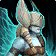
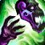

Unborn Val'kyr:
The Unborn Val'kyr is a pet that you don't see that often anymore, its strength comes from the fact that it was the first  Haunt user in the meta.
It does not make it better that this pet is quite a rare catch, so people want to brag about their Valk collection when battling.
| Available Breeds | |
|---|---|
| B/B | 1563 |
Above you can see the breeds available to the Unborn Val'ky, as you can see they only have one breed, which, even though it's a mixed breed it has a very high health pool, but sacrifices a lot of speed.
Sacrifcing speed as a haunt user however, is not a big problem since taking a hit before you get the Haunt off can be a huge benefit.